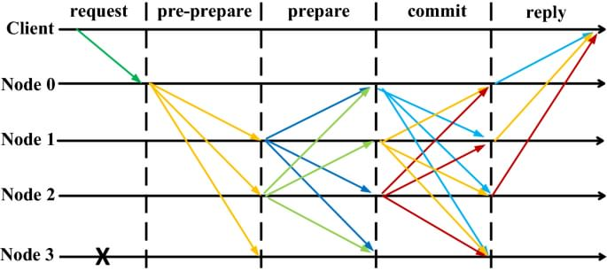

Practical Byzantine Fault Tolerance
Pbft là giải thuật chống lỗi byzantine đầu tiên có thể chạy được trên mạng bất đồng bộ (như internet). Giải thuật được đề xuất vào năm 1999 bởi hai nhà khoa học Castro và Liskov nhằm xây dựng các mô hình chống lỗi byzantine trong thực tế (các giải thuật trước đó thường tốn kém tài nguyên nên khó triển khai). Pbft sử dụng các kĩ thuật mật mã học để đảm bảo tính toàn vẹn của dữ liệu được gửi đi, tránh bị giả mạo.
Giải thuật hoạt động thông qua các view (tương tự round), ở mỗi view sẽ có một node đứng ra làm primary (tương tự như leader), được xác định thông qua công thức v mod N. Trong đó, v là view hiện tại, N là số node trong mạng. Ban đầu, client sẽ gửi request đến node primary, node primary sẽ thực hiện quá trình 3 pha cho request. Khi client thu được f + 1 phản hồi từ các node khác nhau với kết quả phản hồi giống nhau thì có thể đảm bảo kết quả trả về đó là đúng và đã được thống nhất thông qua hệ thống, với f là số node lỗi. Nếu client không nhận được các phản hồi trong thời gian cho phép, nó sẽ gửi lại request đến tất cả các node. Như vậy, node nào không phải là primary sẽ chuyển hướng request đó đến node primary. Nếu request đó đã được xử lý (các xử lý trước được lưu lại) thì node chỉ cần gửi lại phản hồi. Nếu client vẫn không nhận được phản hồi trong thời gian cho phép, nghĩa là node primary có thể đã bị lỗi, lúc này các node sẽ thực hiện giao thức view-change để chuyển sang view mới (thay đổi node primary).
Quá trình 3 pha:

Pbft hoạt động thông qua 3 pha là pre-prepare, prepare và commit. Node primary sau khi nhận được request từ client sẽ gán thêm giá trị sequence number n vào và gửi đi message pre-prepare. Giá trị sequence number là duy nhất ở mỗi view, nhằm đảm bảo thứ thự của các request ở một view cụ thể. Do đó, các node sau khi nhận message pre-prepare, chỉ chấp thuận khi ở node đó chưa từng chấp nhận message pre-prepare cho view v (view v tại thời điểm gửi cũng được gán vào message pre-prepare) có sequence number nằm trong message pre-prepare nhận được nhưng lại có nội dung khác. Khi một node chấp nhận message pre-prepare, nó sẽ gửi message prepare đến các node khác để tiến vào pha prepare. Message prepare chuyển sang trạng thái prepared khi một node nhận được 2f + 1 message prepare ứng với message pre-prepare đó. Tóm lại, pha pre-prepare và prepare nhằm đảm bảo thứ tự của các request trong một view, nếu đã có một request m đã được chấp nhận ứng với sequence number n thì sẽ không có request m’ ≠ m với sequence number n được chấp nhận trong view đó. Sau khi nhận được một message đã ở trạng thái prepared, node sẽ chuyển sang pha commit và gửi message commit ứng với request của nó đến các node trong mạng và đợi phản hồi chấp thuận từ f + 1 node trước khi cập nhập / thực thi request và trả về giá trị cho client. Pha commit nhằm kiểm tra lại, đảm bảo các node trong hệ thống sẵn sàng, đảm bảo tính nhất quán của hệ thống. Nếu không có pha commit mà thực thi / cập nhật request luôn thì rất nguy hiểm vì có thể chưa đảm bảo đủ số lượng node tham gia thực thi / cập nhật.
Giao thức view-change:
Giao thức view-change nhằm đảm bảo tính chất liveness của hệ thống. Khi một node không nhận được phản hồi (nghi ngờ node primary bị lỗi), nó sẽ gửi message view-change đề xuất view v + 1 đến các node trong mạng. Khi node primary của view v + 1 nhận được 2f + 1 message view-change, nó sẽ tiến hành tạo new-view bằng cách gom 2f + 1 messages nhận được làm bằng chứng và gửi message new-view đến tất cả các node khác và tiến vào view v + 1. Node primary mới đó cũng cần phải xử lý lại các message pre-prepare bị lỗi ở view v.
Tham khảo: Castro, M. and Liskov, B. (1999). Practical Byzantine Fault Tolerance. Proceedings of the Third Symposium on Operating Systems Design and Implementation (OSDI'99), pp. 173-186.